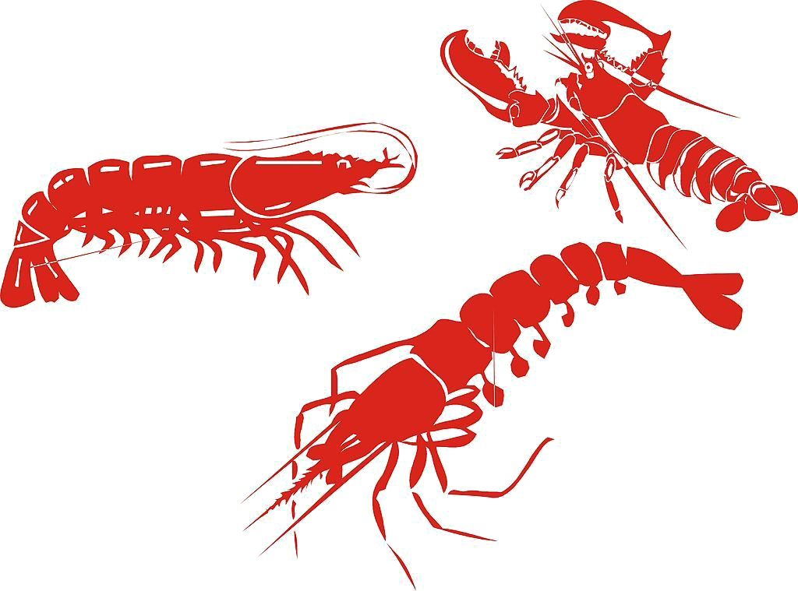

Fatos sobre o Stomatopoda
Informações gerais a respeito do animal
Seu nome cientifivo é Odontodactylus scyllarus
| Reino | Filo | Subfilo | Classe | Subclasse | Ordem |
|---|---|---|---|---|---|
| Animalia | Arthropoda | Crustacea | Malacostraca | Hoplocarida | Stomatopoda |
Parentesco
Um animal marinho que não é nem mantis nem camarão, mas um próximo de caranguejos e lagostas. É um olho composto, feito de milhares de pequenas unidades, cada uma detectando a luz de forma independente.
Visão
Como nós, os camarões louva-a-deus vêem as cores com a ajuda de proteínas sensíveis à luz chamadas opsinas. Eles formam a base dos pigmentos visuais que reagem a diferentes comprimentos de onda da luz, permitindo-nos ver cores diferentes. Se um camarão mantis tem seis receptores de UV, ele deve ter pelo menos seis opsinas que são sensíveis a diferentes sabores de UV